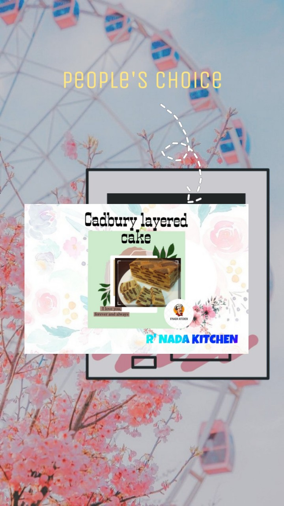

Our Cadbury Layered Cake is using premium ingredients to give the best for our customer.
This Kek Lapis Sarawak are usually served in Sarawak during special occasions. This cake is also known as Kek Lapis Moden Sarawak and Kek Lapis. Kek Lapis Sarawak are usually made for religious or cultural celebrations such as Aidilfitri, Christmas, Deepavali, birthdays and weddings. But here at R'Nada Kitchen, we are offering the cake for you.

|